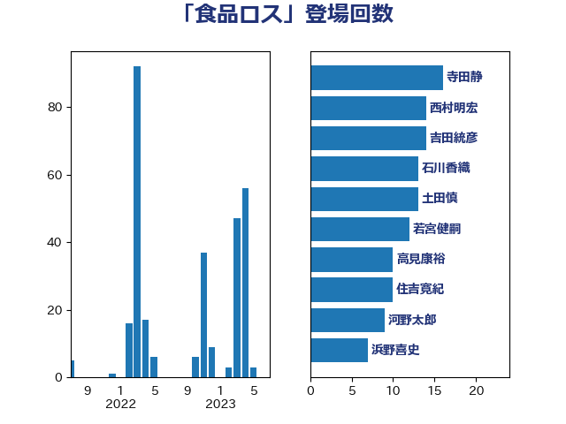

単語「食品ロス」

| 寺田静 | 無所属 | 16 回 |
| 西村明宏 | 自由民主党 | 14 回 |
| 吉田統彦 | 立憲民主党 | 14 回 |
| 石川香織 | 立憲民主党 | 13 回 |
| 土田慎 | 自由民主党 | 13 回 |
| 若宮健嗣 | 自由民主党 | 12 回 |
| 高見康裕 | 自由民主党 | 10 回 |
| 住吉寛紀 | 日本維新の会 | 10 回 |
| 河野太郎 | 自由民主党 | 9 回 |
| 浜野喜史 | 国民民主党 | 7 回 |
| 川田龍平 | 立憲民主党 | 7 回 |
| 山口壯 | 自由民主党 | 7 回 |
| 輿水恵一 | 公明党 | 6 回 |
| 竹谷とし子 | 公明党 | 6 回 |
| ながえ孝子 | 無所属 | 6 回 |
| 野村哲郎 | 自由民主党 | 5 回 |
| 丹羽秀樹 | 自由民主党 | 5 回 |
| 池畑浩太朗 | 日本維新の会 | 4 回 |
| 宮崎勝 | 公明党 | 4 回 |
| 土屋品子 | 自由民主党 | 4 回 |
| 中田宏 | 自由民主党 | 4 回 |
| 長友慎治 | 国民民主党 | 3 回 |
| 進藤金日子 | 自由民主党 | 3 回 |
| 赤池誠章 | 自由民主党 | 3 回 |
| 田村まみ | 国民民主党 | 3 回 |
| 漆間譲司 | 日本維新の会 | 3 回 |
| 梅村みずほ | 日本維新の会 | 3 回 |
| 末松信介 | 自由民主党 | 3 回 |
| 小沼巧 | 立憲民主党 | 3 回 |
| 稲津久 | 公明党 | 2 回 |
| 上野通子 | 自由民主党 | 2 回 |
| 上田清司 | 国民民主党 | 2 回 |
| 角田秀穂 | 公明党 | 1 回 |
| 空本誠喜 | 日本維新の会 | 1 回 |
| 矢倉克夫 | 公明党 | 1 回 |
| 柳本顕 | 自由民主党 | 1 回 |
| 松野博一 | 自由民主党 | 1 回 |
| 山崎誠 | 立憲民主党 | 1 回 |
| 堤かなめ | 立憲民主党 | 1 回 |
| 国光あやの | 自由民主党 | 1 回 |
| 佐々木さやか | 公明党 | 1 回 |
| 串田誠一 | 日本維新の会 | 1 回 |
| 中川康洋 | 公明党 | 1 回 |
| 下野六太 | 公明党 | 1 回 |